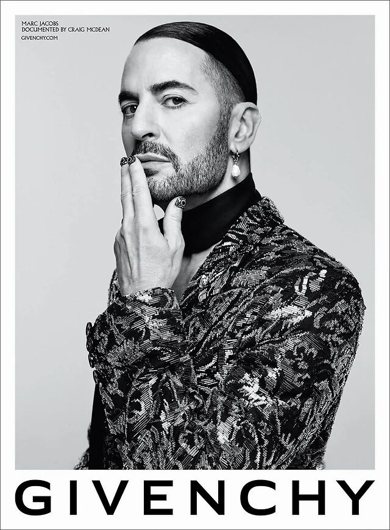
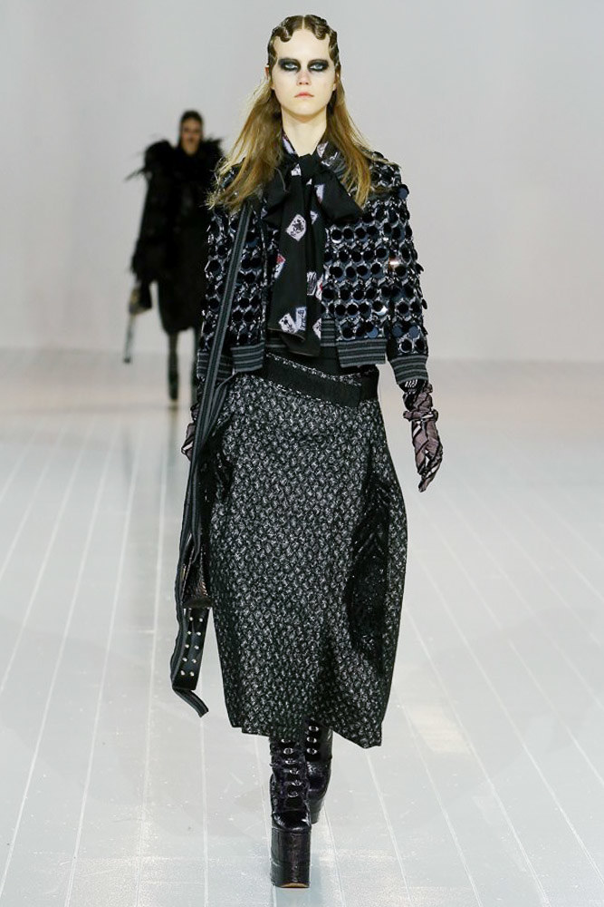
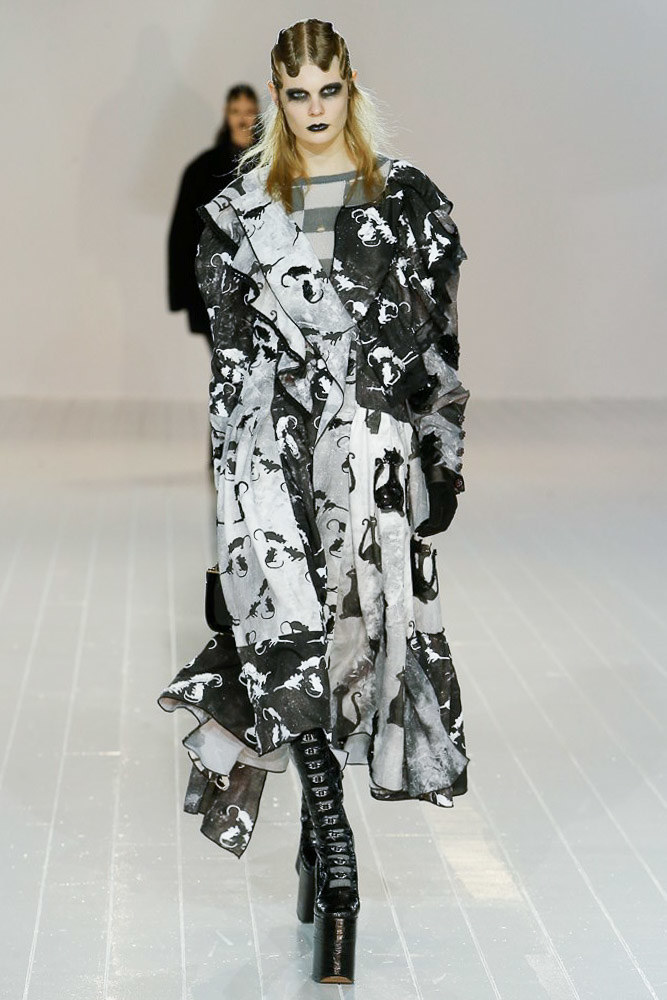
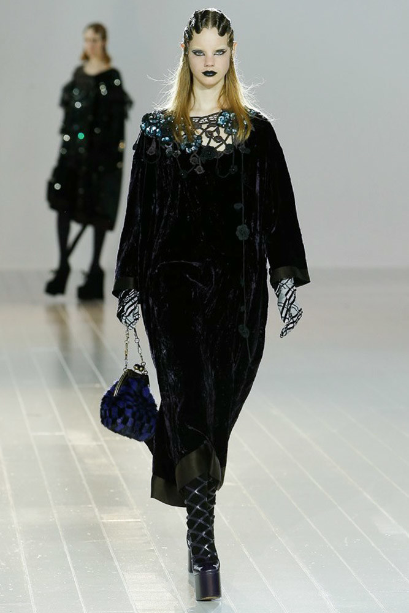
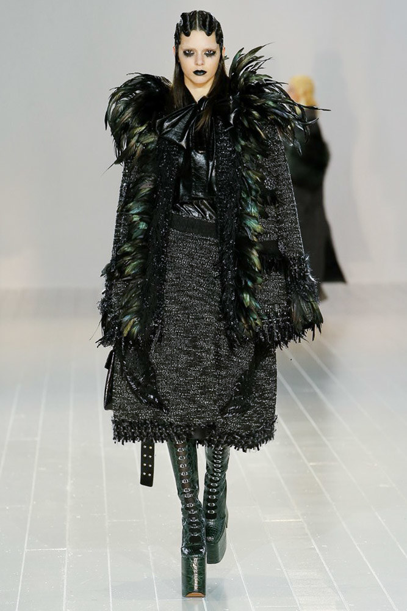
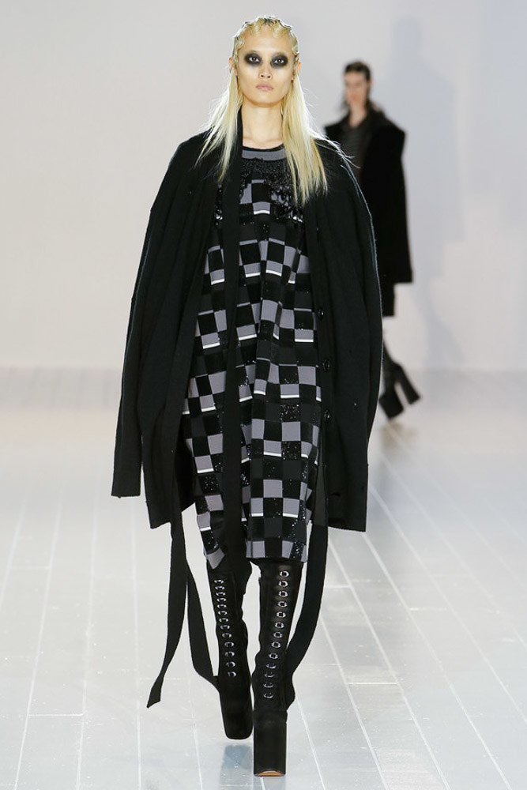
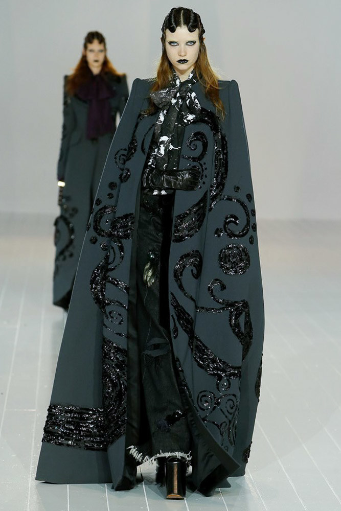

MODA
Marc Jacobs (inverno 2017)
- QUEM É MARC JACOBS?
Nascido em 9 de abril de 1963 em Nova York, Marc Jacobs cursou moda em uma das escolas de design mais prestigiosas dos Estados Unidos, a Parsons. Ainda na faculdade, o estilista já se destacava - ganhou o prêmio Perry Ellis e posteriormente se tornou o designer mais jovem a receber o Prêmio jovens talentos do CFDA, em 1987.

- ALGUMAS DE SUAS COLEÇÕES MAIS FAMOSAS;
Grunge Collection (1992)
Monograma Grafite (2001)
Monograma Multicolore (2005)
Monograma Aquarel (2007)
Heaven (2020)
- INVERNO 2017
Matrioskas Góticas
leva o conceito oversized ao extremo e infla silhuetas até transformar suas modelos em matrioskas góticas - sua gangue veste um romance dark que também flerta com o esporte, em uma cartela soturna formada exclusivamente por preto e tons de cinza e prata.
- PEÇAS;






Confira todas as peças
aqui